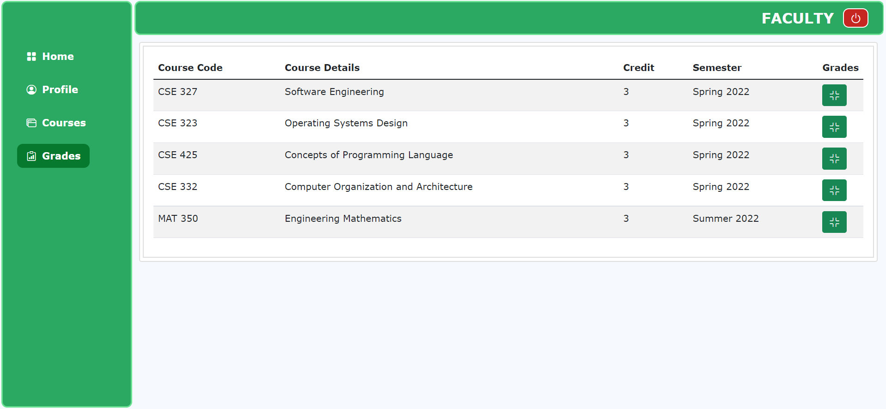
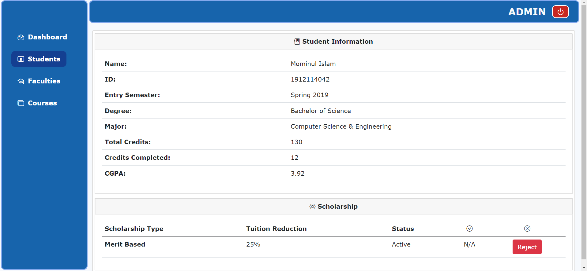
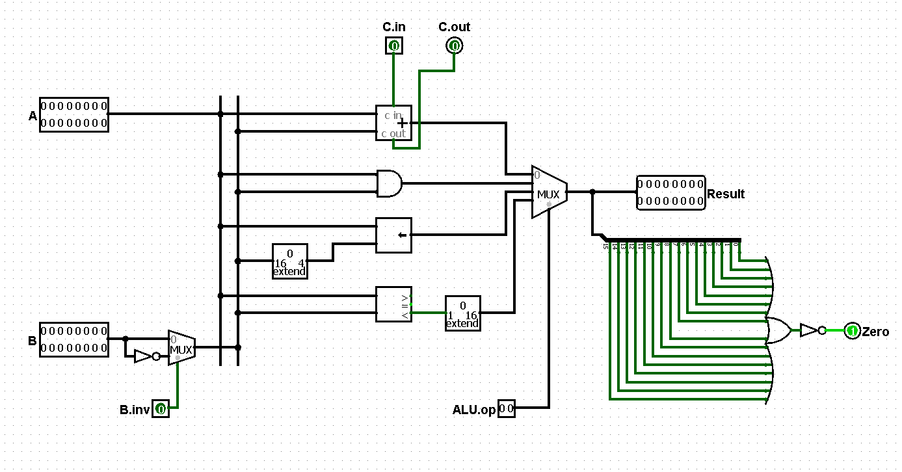

ML/DL
Jan. 2024
Jun. 2023
-
A multilingual T5 model is fine-tuned to generate summaries from Bengali text using encoder-decoder architectures for cross-lingual understanding and coherent text generation.
Model: mT5 - Code
Jun. 2024
-
A top-down heatmap-based pose estimation model is trained using keypoint annotations in the MMpose framework with an HRNet backbone to accurately detect cattle anatomical landmarks.
Models: HRNet-32 - Code
Jul. 2022
-
Predictive models are trained on structured tabular clinical data to detect heart disease risk using classical machine learning algorithms.
Algorithms: Logistic Regression, Random Forest, Decision Tree, KNN, Naive Bayes - Code
Web Application Projects
May 2022
- A web application is developed to allow users to search, view, and manage records of student internships across multiple universities and companies.
- Front-end: HTML5, CSS3, Sass, JavaScript, Ajax
- Back-end: PHP
- DBMS: MySQL
- Code
Architecture

ERD

Login/Registration

Jan. 2022
- A web application is built to manage course registration, grade tracking, scholarship applications, and faculty/admin tasks, with easy adaptability for other institutions.
- Front-end: HTML5, CSS3, Bootstrap 5, JavaScript
- Back-end: Node.js, Express.js
- DBMS: MongoDB, Mongoose ODM
- Code
Schema

Login Page

Student Portal

Faculty Portal

Admin Portal

Hardware Simulation Projects
May 2021
- A 16-bit single-cycle RISC CPU is simulated, including the ISA, assembler, and data-path, to demonstrate instruction execution and processor design.
- Language: Assembly Language, Python
- Software: Logisim
- Code
Datapath

Control Unit

Register

ALU
